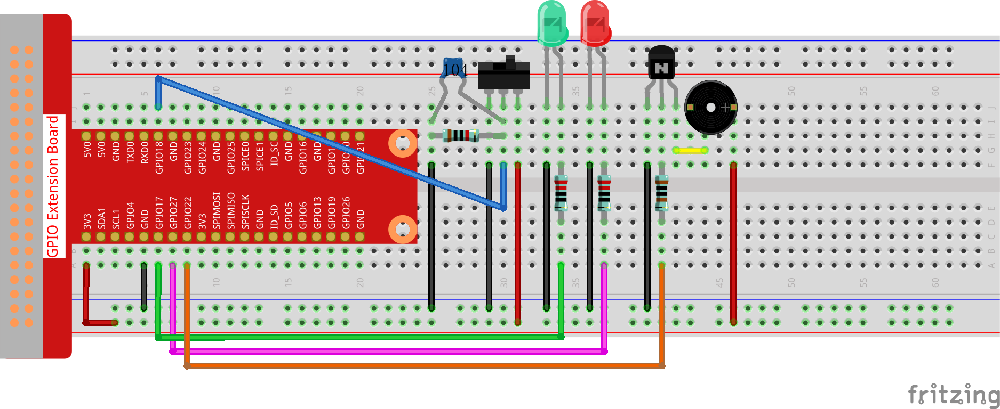

Note
Bonjour et bienvenue dans la communauté SunFounder Raspberry Pi & Arduino & ESP32 Enthusiasts sur Facebook ! Approfondissez vos connaissances en matière de Raspberry Pi, Arduino et ESP32 avec d’autres passionnés.
Pourquoi nous rejoindre ?
Assistance d’experts : Résolvez les problèmes après-vente et les défis techniques grâce à l’aide de notre communauté et de notre équipe.
Apprendre & Partager : Échangez des astuces et des tutoriels pour améliorer vos compétences.
Aperçus exclusifs : Profitez d’un accès anticipé aux annonces de nouveaux produits et aux avant-premières.
Réductions spéciales : Bénéficiez de réductions exclusives sur nos derniers produits.
Promotions festives et concours : Participez à des concours et à des promotions spéciales pendant les fêtes.
👉 Prêt à explorer et créer avec nous ? Cliquez sur [Ici] et rejoignez-nous dès aujourd’hui !
3.1.10 Alarme Sonore
Introduction
Dans ce cours, nous allons créer un dispositif d’alarme manuel. Vous pouvez remplacer l’interrupteur à bascule par un thermistor ou un capteur photosensible pour en faire une alarme de température ou une alarme de lumière.
Composants

Schéma de câblage
T-Board Name |
physical |
wiringPi |
BCM |
GPIO17 |
Pin 11 |
0 |
17 |
GPIO18 |
Pin 12 |
1 |
18 |
GPIO27 |
Pin 13 |
2 |
27 |
GPIO22 |
Pin 15 |
3 |
22 |

Procédures expérimentales
Étape 1 : Construisez le circuit.
{kind=link}
Pour les utilisateurs du langage C
Étape 2 : Changez de répertoire.
cd ~/davinci-kit-for-raspberry-pi/c/3.1.10/
Étape 3 : Compilez.
gcc 3.1.10_AlarmBell.c -lwiringPi -lpthread
Étape 4 : Exécutez.
sudo ./a.out
Après le démarrage du programme, l’interrupteur à bascule sera basculé vers la droite, et le buzzer émettra des sons d’alarme. En même temps, les LEDs rouge et verte clignoteront à une certaine fréquence.
Note
Si cela ne fonctionne pas après l’exécution ou si un message d’erreur apparaît : "wiringPi.h: No such file or directory", veuillez vous référer à C code is not working?.
Explication du code
#include <pthread.h>
Dans ce code, vous utiliserez une nouvelle bibliothèque, pthread.h, qui est un ensemble de bibliothèques de threads courantes permettant de réaliser le multithreading. Nous ajoutons le paramètre -lpthread lors de la compilation pour que les LED et le buzzer puissent fonctionner indépendamment.
void *ledWork(void *arg){
    while(1)
    {
        if(flag==0){
            pthread_exit(NULL);
        }
        digitalWrite(ALedPin,HIGH);
        delay(500);
        digitalWrite(ALedPin,LOW);
        digitalWrite(BLedPin,HIGH);
        delay(500);
        digitalWrite(BLedPin,LOW);
    }
}
La fonction ledWork() permet de définir l’état de fonctionnement des 2 LEDs : la LED verte reste allumée pendant 0,5s puis s’éteint ; de même, la LED rouge s’allume pendant 0,5s puis s’éteint.
void *buzzWork(void *arg){
    while(1)
    {
        if(flag==0){
            pthread_exit(NULL);
        }
        if((note>=800)||(note<=130)){
            pitch = -pitch;
        }
        note=note+pitch;
        softToneWrite(BeepPin,note);
        delay(10);
    }
}
La fonction buzzWork() sert à configurer l’état de fonctionnement du buzzer. Ici, nous définissons la fréquence entre 130 et 800, en l’augmentant ou la diminuant par intervalles de 20.
void on(){
    flag = 1;
    if(softToneCreate(BeepPin) == -1){
        printf("setup softTone failed !");
        return;
    }
    pthread_t tLed;
    pthread_create(&tLed,NULL,ledWork,NULL);
    pthread_t tBuzz;
    pthread_create(&tBuzz,NULL,buzzWork,NULL);
}
Dans la fonction on() :
Définir le marqueur "flag=1", indiquant la fin du contrôle du thread.
Créer un pin de tonalité contrôlé par logiciel BeepPin.
Créer deux threads séparés pour que les LEDs et le buzzer puissent fonctionner simultanément.
pthread_t tLed: Déclare un thread tLed.
pthread_create(&tLed,NULL,ledWork,NULL) : Créez le thread avec le prototype suivant :
int pthread_create(pthread_t *restrict tidp, const pthread_attr_t *restrict_attr, void*（start_rtn)(void), void *restrict arg);
Valeur de retour
Si la création est réussie, retourne "0" ; sinon, retourne le numéro d’erreur "-1".
Paramètres
void off(){
    flag = 0;
    softToneStop(BeepPin);
    digitalWrite(ALedPin,LOW);
    digitalWrite(BLedPin,LOW);
}
La fonction off() définit "flag=0" pour arrêter les threads ledWork et buzzWork, puis désactive le buzzer et les LEDs.
int main(){
    setup();
    int lastState = 0;
    while(1){
        int currentState = digitalRead(switchPin);
        if ((currentState == 1)&&(lastState==0)){
            on();
        }
        else if((currentState == 0)&&(lastState==1)){
            off();
        }
        lastState=currentState;
    }
    return 0;
}
La fonction main() contient l’ensemble du processus du programme : elle lit d’abord la valeur de l’interrupteur à bascule ; si celui-ci est basculé vers la droite (lecture à 1), la fonction on() est appelée, le buzzer émet des sons et les LEDs rouge et verte clignotent. Sinon, le buzzer et les LEDs restent éteints.
Pour les utilisateurs de Python
Étape 2 : Changez de répertoire.
cd ~/davinci-kit-for-raspberry-pi/python/
Étape 3 : Exécutez.
sudo python3 3.1.10_AlarmBell.py
Après le démarrage du programme, l’interrupteur à bascule sera positionné à droite, et le buzzer émettra des sons d’alarme. En même temps, les LEDs rouge et verte clignoteront à une certaine fréquence.
Code
Note
Vous pouvez Modifier/Réinitialiser/Copier/Exécuter/Arrêter le code ci-dessous. Mais avant cela, vous devez vous rendre dans le chemin source du code comme davinci-kit-for-raspberry-pi/python.
import RPi.GPIO as GPIO
import time
import threading
BeepPin=22
ALedPin=17
BLedPin=27
switchPin=18
Buzz=0
flag =0
note=150
pitch=20
def setup():
GPIO.setmode(GPIO.BCM)
GPIO.setup(BeepPin, GPIO.OUT)
GPIO.setup(ALedPin,GPIO.OUT,initial=GPIO.LOW)
GPIO.setup(BLedPin,GPIO.OUT,initial=GPIO.LOW)
GPIO.setup(switchPin,GPIO.IN)
global Buzz
Buzz=GPIO.PWM(BeepPin,note)
def ledWork():
while flag:
GPIO.output(ALedPin,GPIO.HIGH)
time.sleep(0.5)
GPIO.output(ALedPin,GPIO.LOW)
GPIO.output(BLedPin,GPIO.HIGH)
time.sleep(0.5)
GPIO.output(BLedPin,GPIO.LOW)
def buzzerWork():
global pitch
global note
while flag:
if note >= 800 or note <=130:
pitch = -pitch
note = note + pitch
Buzz.ChangeFrequency(note)
time.sleep(0.01)
def on():
global flag
flag = 1
Buzz.start(50)
tBuzz = threading.Thread(target=buzzerWork)
tBuzz.start()
tLed = threading.Thread(target=ledWork)
tLed.start()
def off():
global flag
flag = 0
Buzz.stop()
GPIO.output(ALedPin,GPIO.LOW)
GPIO.output(BLedPin,GPIO.LOW)
def main():
lastState=0
while True:
currentState =GPIO.input(switchPin)
if currentState == 1 and lastState == 0:
on()
elif currentState == 0 and lastState == 1:
off()
lastState=currentState
def destroy():
off()
GPIO.cleanup()
if __name__ == '__main__':
setup()
try:
main()
except KeyboardInterrupt:
destroy()
Explication du Code
import threading
Ici, nous importons le module Threading qui permet d’exécuter plusieurs tâches simultanément, tandis que les programmes normaux ne peuvent exécuter le code que de haut en bas. Avec les modules Threading, les LED et le buzzer peuvent fonctionner indépendamment.
def ledWork():
    while flag:
        GPIO.output(ALedPin,GPIO.HIGH)
        time.sleep(0.5)
        GPIO.output(ALedPin,GPIO.LOW)
        GPIO.output(BLedPin,GPIO.HIGH)
        time.sleep(0.5)
        GPIO.output(BLedPin,GPIO.LOW)
La fonction ledWork() permet de régler l’état de fonctionnement des 2 LEDs : elle maintient la LED verte allumée pendant 0,5s puis l’éteint ; de même, la LED rouge s’allume pendant 0,5s puis s’éteint.
def buzzerWork():
    global pitch
    global note
    while flag:
        if note >= 800 or note <=130:
            pitch = -pitch
        note = note + pitch
        Buzz.ChangeFrequency(note)
        time.sleep(0.01)
La fonction buzzWork() sert à régler l’état de fonctionnement du buzzer. Ici, la fréquence est réglée entre 130 et 800, augmentant ou diminuant par intervalles de 20.
def on():
    global flag
    flag = 1
    Buzz.start(50)
    tBuzz = threading.Thread(target=buzzerWork)
    tBuzz.start()
    tLed = threading.Thread(target=ledWork)
    tLed.start()
Dans la fonction on() :
Définissez le marqueur "flag=1", indiquant le démarrage du thread de contrôle.
Lancez Buzz et définissez le cycle de service à 50 %.
Créez 2 threads séparés pour que la LED et le buzzer puissent fonctionner en même temps.
tBuzz = threading.Thread(target=buzzerWork) : Créez le thread avec le prototype suivant :
class threading.Thread(group=None, target=None, name=None, args=(), kwargs={}, *, daemon=None)
Parmi les méthodes de construction, le principal paramètre est target, auquel nous devons assigner un objet exécutable (ici, les fonctions ledWork et BuzzWork).
Ensuite, on appelle start() pour lancer l’objet thread, ex., tBuzz.start() est utilisé pour démarrer le thread tBuzz nouvellement créé.
def off():
    global flag
    flag = 0
    Buzz.stop()
    GPIO.output(ALedPin,GPIO.LOW)
    GPIO.output(BLedPin,GPIO.LOW)
- La fonction off() définit "flag=0" pour arrêter les threads ledWork et
BuzzWork, puis désactive le buzzer et les LEDs.
def main():
    lastState=0
    while True:
        currentState =GPIO.input(switchPin)
        if currentState == 1 and lastState == 0:
            on()
        elif currentState == 0 and lastState == 1:
            off()
        lastState=currentState
La fonction main() contient tout le processus du programme : elle lit d’abord la valeur de l’interrupteur à bascule ; si celui-ci est basculé vers la droite (lecture à 1), la fonction on() est appelée, entraînant l’activation du buzzer et le clignotement des LEDs rouge et verte. Sinon, le buzzer et les LEDs restent inactifs.
Image illustrant le phénomène